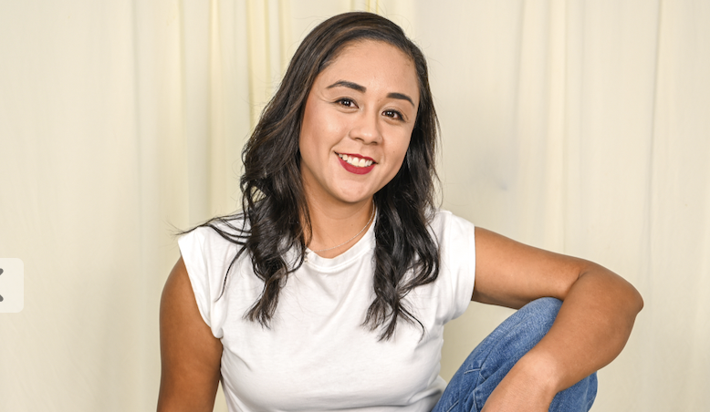

Welcome to my personal web page

Artificial Intelligence Student at CPCC
Hello! My name is Claudia, and I am a student at Central Piedmont Community College (CPCC). I am currently studying Artificial Intelligence.
I am originally from Mexico. My family and I moved to North Carolina in August 2021 because of my husband’s job relocation, and that is how we began our new life here. I am a proud mother of two wonderful children, ages 9 and 7, who bring so much joy and inspiration to my life every day. I have spent the last several years focused on my family and raising my children. Now, I have decided to return to school to continue growing professionally and to add new skills to my resume. My goal is to return to work as an engineer, bringing both my previous experience and new knowledge to my career.
I am an Industrial Engineer, and I am currently majoring in Artificial Intelligence at Central Piedmont Community College. My goal is to continue learning about AI, programming, and data analysis, and possibly pursue further education in technology-related fields.
I plan to combine my engineering experience with AI and data skills to improve processes and support better decision-making in organizations.